Tertiary: Villager #3 press kit
Everything you need to write about the game: the facts, text you can quote, the trailer, screenshots, GIFs and logos. Free to use in coverage; no need to ask first.
The ZIP holds the fact sheet and descriptions, 7 screenshots, 7 key art images, the logos and 7 GIFs. The videos are separate downloads, listed under Videos.
Description Quote freely
The hero gets the story. You get the upgrades.
You're the NPC by the well in someone else's RPG: buy upgrades for yourself and the game around you until the Hero finally notices you.
An active comedy incremental about the NPC by the well. Earn Screen Time every time the Hero walks past, then upgrade yourself and the game you're stuck in: a second line of dialogue, legs (beta), 16-bit color, a kazoo, a chiptune band. The hero gets the story. You get the upgrades.
You are Villager #3. You stand by the well in Mossbrook and say one line: "Welcome to Mossbrook!" You have four colors (all green), no legs, no music and no name. Every 45 seconds or so, Lance Valorheart, the Hero, walks past on his way to the real adventure. He has never once looked at you.
Every time he walks past, you earn Screen Time. Spend it: on a second line of dialogue, Legs (beta), a name up to 8 letters long, a wooden spoon, 16-bit color that spreads out from you while the Hero stays stubbornly monochrome, and a soundtrack that starts as one kazoo.
Say your line at exactly the right moment, photobomb his cutscenes, beat Villager #2 to the Hero's errands, and catch Gerald, Chicken #3, the only one who has always noticed you. Every purchase changes how Mossbrook looks, sounds or plays, and the whole town has opinions about it.
Features
- An active comedy incremental where nearly every upgrade visibly or audibly changes the game, with a joke attached
- 16-bit JRPG pixel art that starts in four shades of Game Boy green and earns every color
- An original chiptune soundtrack that grows from silence to kazoo to band to 16-bit orchestra. No licensed music, so it's safe to stream and monetize
- Active without frantic clicking: hold to wave, a Relaxed or Auto assist for the timing mini-games, and some progress while you're away
- Every reveal can be skipped after half a second and replayed in the Upgrade Museum
- Mouse, keyboard or controller
- Three acts, about 4–6 hours to the credits, then New Game+
Videos Exhibit T
| Video and files | Length | Size |
|---|---|---|
| Trailerwith sound captionsMP4 6.3 MBWebM 6.5 MB | 1:16 | 1920×1080 |
| Social cut16:9, for X, Bluesky and DiscordMP4 2.2 MBWebM 2.3 MB | 0:33 | 1920×1080 |
| Short9:16, for phonesMP4 1.8 MBWebM 1.6 MB | 0:18 | 1080×1920 |
Web copies at full resolution: H.264 MP4 and VP9 WebM, with the game's own sound. Higher-bitrate masters are available on request.
GIFs and clips Silent, captions on
| Preview | Clip and files | Length |
|---|---|---|
 | The Bloom16-Bit Color: the Hero walks through it, still green. (He's dry-clean only.)GIF 584 KBMP4 590 KBWebM 714 KB | 8 s |
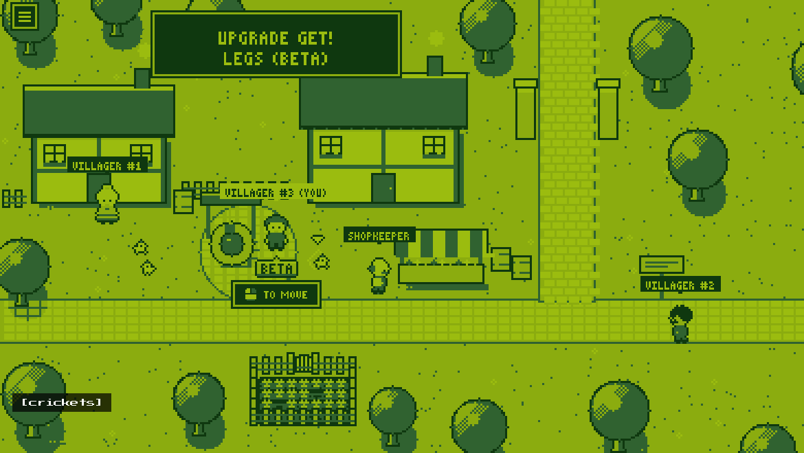 | Legs (beta)Legs (beta). Known issues: all of them.GIF 343 KBMP4 504 KBWebM 544 KB | 11.5 s |
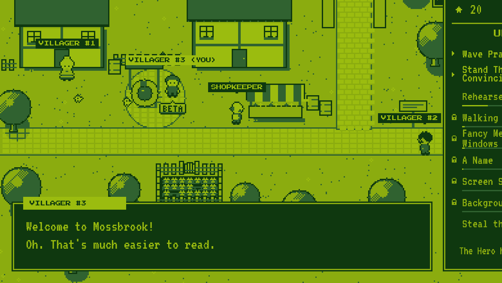 | A Real FontA Real Font: every letter flips over.GIF 136 KBMP4 234 KBWebM 306 KB | 6.5 s |
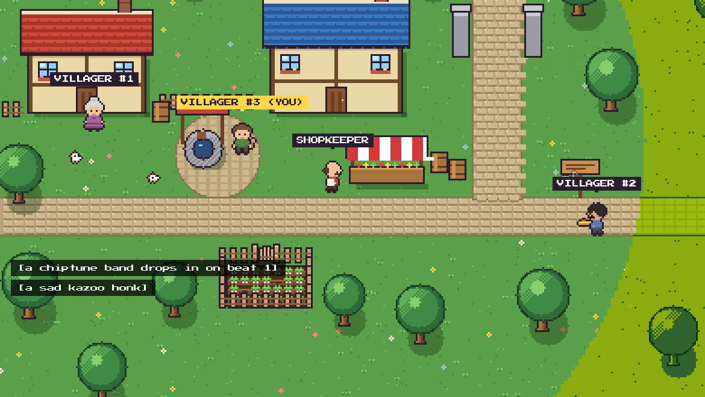 | The DropBackground Music: one kazoo, then the band.GIF 474 KBMP4 496 KBWebM 559 KB | 11 s |
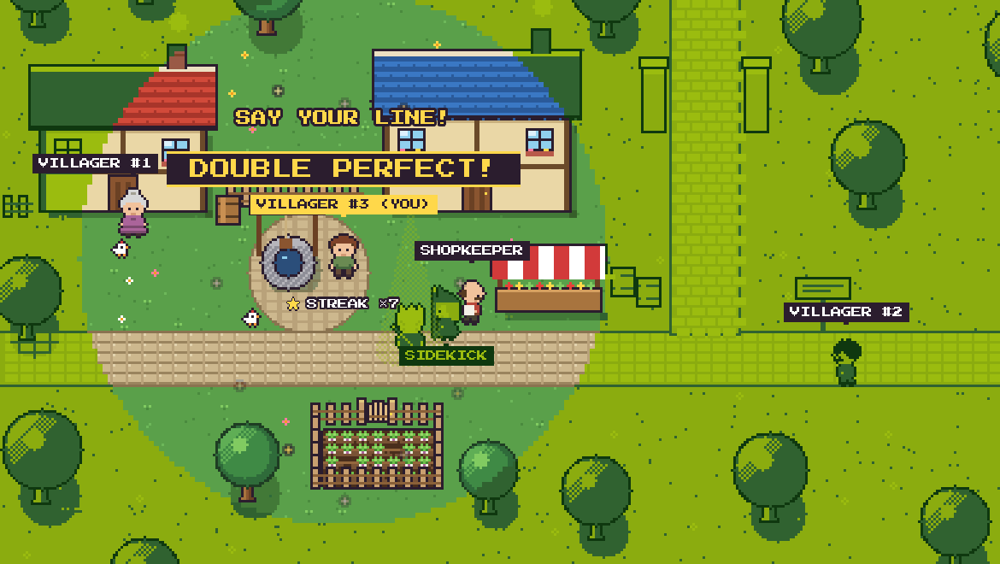 | Say Your Line!Say Your Line! PERFECT, PERFECT, DOUBLE PERFECT.GIF 412 KBMP4 528 KBWebM 641 KB | 6 s |
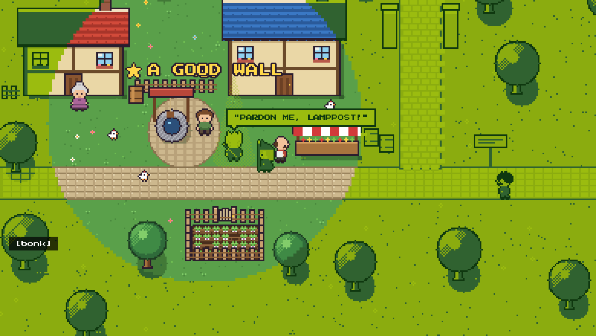 | Be a WallThe Hero marches behind his map. Villager #3 is a wall. A good wall.GIF 303 KBMP4 533 KBWebM 586 KB | 10.5 s |
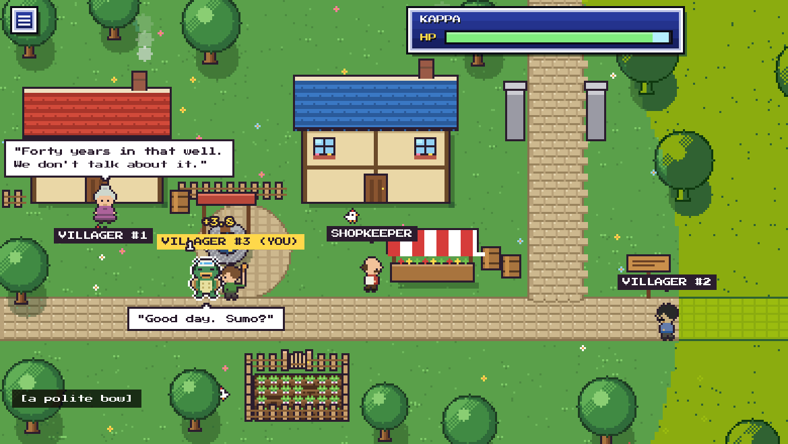 | Something in the wellTwenty bonks on the well, and something climbs out: Good day. Sumo?GIF 1.4 MBMP4 898 KBWebM 920 KB | 12 s |


1170×660, every game pixel exactly 3×3. Each clip is 12 seconds or less, made for store pages and posts.
Images Exhibits A–G
Real gameplay, 1920×1080 PNG. Open a thumbnail for the full-size file. All screenshots (ZIP, 525 KB)

![Exhibit B: The start: Mossbrook in four shades of green with crude lettering. Villager #3 says WELCOME TO MOSSBROOK! and the caption reads [crickets].](../../tertiary/media/screenshots/02-before-green.png)

![Exhibit D: Villager #2 plays a kazoo inside the circle of color, with music notes and the caption [a kazoo, badly].](../../tertiary/media/screenshots/03-kazoo.png)


Key art


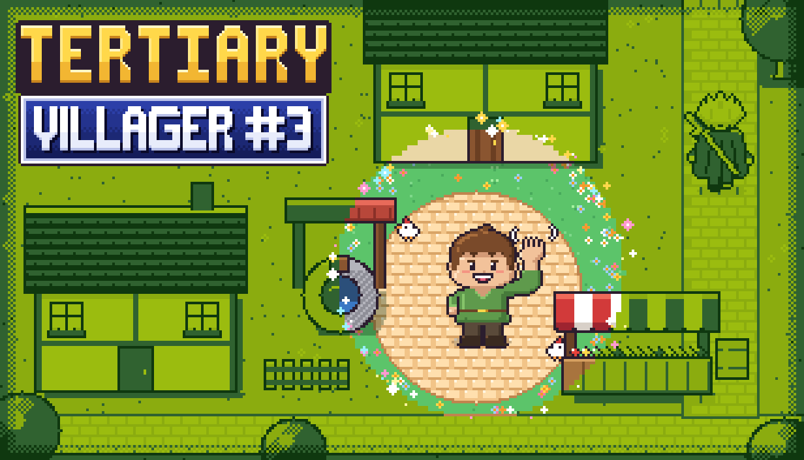


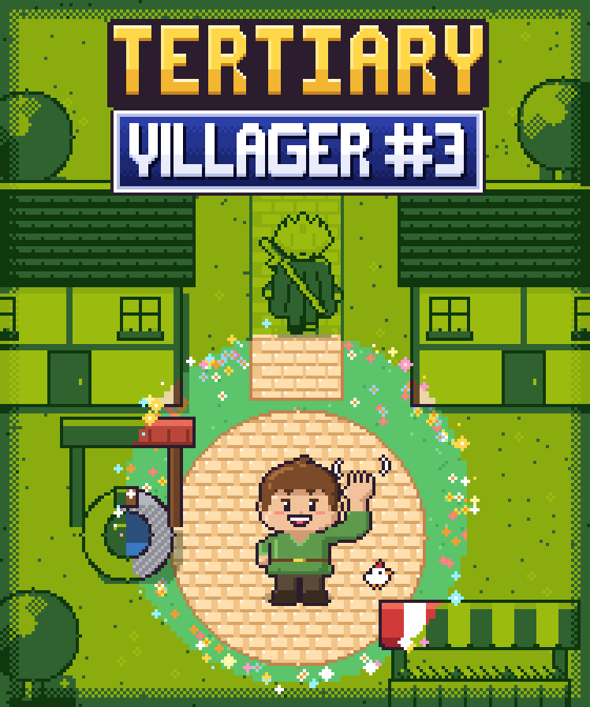

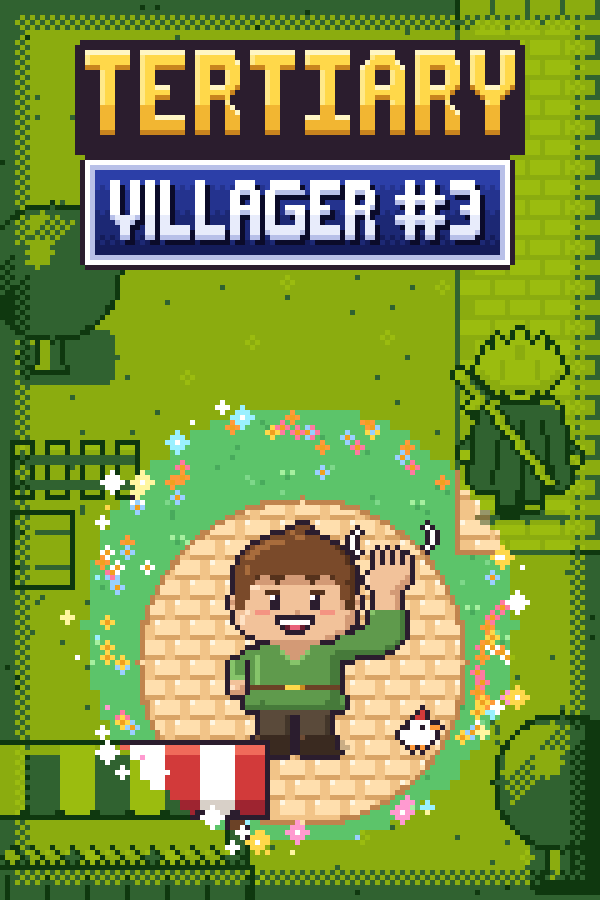

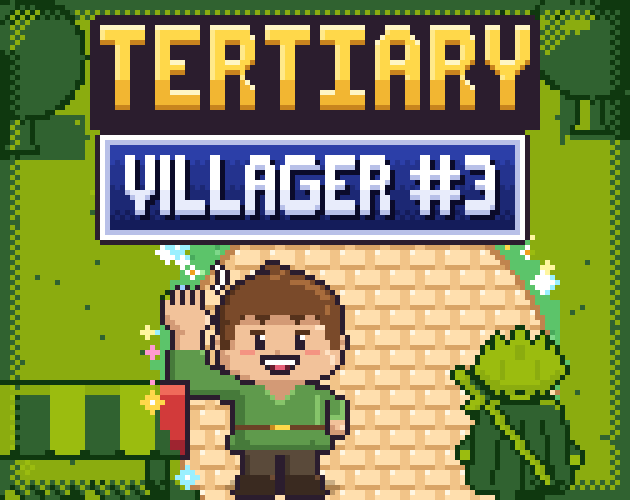

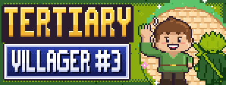
Logos


More studio logos (stacked, seal, one-colour) are on the studio press page, or all at once: studio logos (ZIP, 2.5 MB).
Selected articles
Nothing on the record yet. If you write about the game, tell us and we'll add your link here.
Using these files
You may use the screenshots, videos, GIFs and logos on this page in coverage of the game: articles, reviews, videos and streams, commercial or not. No need to ask first. The soundtrack has no licensed music, so videos and streams of the game are safe to monetize.
About Class Action Games
Class Action Games is an independent game studio that makes comedy games. Its first game, Tertiary: Villager #3, is an active comedy incremental about the NPC by the well, coming to Steam.
Credits and contact
Developer and publisher: Class Action Games
Press and business: classactiongames@gmail.com